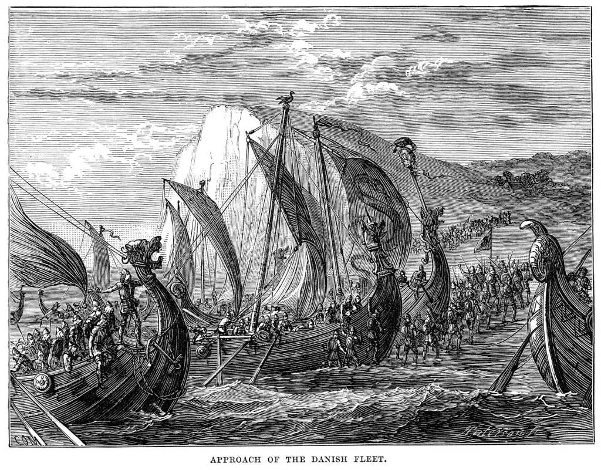

Orígenes y Expansión
Origen de los Vikingos
La civilización vikinga tuvo sus orígenes en las regiones escandinavas del norte de Europa, concretamente en lo que hoy conocemos como Noruega, Suecia y Dinamarca. Estos territorios, caracterizados por paisajes montañosos, costas recortadas y climas fríos, dieron forma a una sociedad que tuvo que adaptarse a condiciones naturales adversas. La tierra cultivable era escasa, lo que incentivó a las comunidades locales a buscar medios alternativos de subsistencia más allá de la agricultura.
Los vikingos eran parte de los pueblos germánicos del norte. A pesar de la percepción popular de ellos como meros saqueadores, su sociedad estaba estructurada y contaba con una rica cultura. Vivían en pequeñas aldeas, formadas por clanes familiares, y dependían de la agricultura, la ganadería, la pesca y el comercio para sobrevivir. Tenían una organización social jerárquica, encabezada por caudillos o jefes locales, conocidos como jarls, que lideraban tanto en tiempos de paz como de guerra.
La cultura vikinga era profundamente religiosa. Sus creencias estaban basadas en la mitología nórdica, un sistema complejo que incluía múltiples dioses y criaturas. Odín, el dios principal, era considerado el dios de la sabiduría, la guerra y la muerte. Thor, su hijo, era el protector de la humanidad, dios del trueno y la fuerza. Freyja, diosa del amor, la fertilidad y la belleza, era también una de las más veneradas. Estas deidades vivían en Asgard, uno de los nueve mundos interconectados por el gran árbol cósmico Yggdrasil, según la cosmogonía vikinga.
Además de los dioses, los vikingos creían en la vida después de la muerte. Para los guerreros, morir en batalla era una forma honorable de alcanzar el Valhalla, el gran salón de los caídos gobernado por Odín. Los que no morían combatiendo eran llevados al reino de Hel, un lugar más sombrío. Los rituales funerarios variaban según el estatus social del difunto, incluyendo desde cremaciones hasta entierros en barcos con ofrendas.
Uno de los pilares fundamentales de la civilización vikinga fue su dominio del mar. Los pueblos escandinavos desarrollaron técnicas de navegación avanzadas para la época. Sus barcos, conocidos como drakkars o langskips, eran veloces, maniobrables y aptos tanto para aguas abiertas como para ríos estrechos. Estas embarcaciones les permitieron no solo realizar incursiones, sino también explorar, comerciar y colonizar nuevas tierras a grandes distancias.
El aislamiento relativo de Escandinavia, unido a su geografía fragmentada, permitió el desarrollo de una identidad propia. Aunque compartían una lengua común (el nórdico antiguo) y una base cultural similar, cada región escandinava tenía sus propias variantes y formas de organización política. A comienzos del siglo VIII, estas comunidades eran en su mayoría autónomas y descentralizadas, lo que favoreció la aparición de múltiples líderes con ambiciones personales.
Hacia finales del siglo VII, varios factores comenzaron a empujar a los vikingos hacia la expansión. El crecimiento de la población, sumado a las limitaciones de los recursos locales, incentivó la búsqueda de nuevos territorios. Al mismo tiempo, el auge del comercio en Europa ofrecía oportunidades para establecer rutas comerciales y obtener riquezas. Los vikingos ya habían tenido contacto con otras culturas a través del comercio ámbar, pieles y metales desde siglos anteriores.
Los primeros movimientos de expansión no fueron organizados como campañas militares, sino más bien como expediciones independientes de exploradores, comerciantes y guerreros. Algunos partían en busca de fortuna y aventura, otros simplemente para encontrar tierras más fértiles o establecerse con sus familias. En muchas ocasiones, lo que comenzaba como incursión acababa en colonización.
La estructura social vikinga también favorecía la movilidad. Los jóvenes varones eran entrenados desde pequeños en el uso de armas y la navegación. La tradición oral, a través de sagas y poemas épicos, transmitía historias de héroes y viajes que inspiraban a las nuevas generaciones a buscar gloria y honor más allá del mar.
Expansión de los Vikingos (Siglos VIII-XI)
La expansión vikinga fue un fenómeno histórico que tuvo lugar entre los siglos VIII y XI, conocido como la Era Vikinga. Durante este periodo, los pueblos escandinavos —principalmente de Noruega, Suecia y Dinamarca— extendieron su influencia por vastas regiones de Europa y más allá. Impulsados por la necesidad de nuevas tierras, riquezas y rutas comerciales, así como por su destreza en la navegación, los vikingos iniciaron una serie de incursiones, exploraciones y asentamientos sin precedentes.
La expansión vikinga, también conocida como la Era Vikinga (aproximadamente 793–1066), fue un periodo de intensas migraciones, comercio, conquistas y asentamientos.
- El ataque a Lindisfarne (793)
El primer registro documentado de una incursión vikinga fue el ataque al monasterio de Lindisfarne en la costa noreste de Inglaterra en 793. Este evento marcó simbólicamente el inicio de la Era Vikinga. Los saqueos se extendieron rápidamente por las Islas Británicas
- Rutas hacia el oeste
- Inglaterra: Realizaron múltiples incursiones. A partir del siglo IX, establecieron el Danelaw, una región bajo control vikingo que coexistió con los reinos anglosajones.
- Escocia e Irlanda: Fundaron asentamientos como Dublín, Cork y Limerick. Estas ciudades vikingas se convirtieron en importantes centros comerciales.
- Islas del Atlántico Norte: Colonizaron las Islas Feroe, Shetland, Orkney y posteriormente Islandia.
- Francia: En el siglo IX, atacaron París y otras regiones del norte. En 911, el rey Carlos el Simple otorgó a Rollo un territorio que se convertiría en Normandía, a cambio de protección frente a futuras incursiones.
Los vikingos noruegos y daneses se dirigieron principalmente hacia el oeste:
- Rutas hacia el este
- Rusia y Ucrania: Se asentaron en regiones estratégicas y fundaron rutas comerciales a través de los ríos Volga y Dniéper. Su presencia fue crucial en el desarrollo de la Rus de Kiev, considerado un antecesor del estado ruso.
- Bizancio: Los varegos sirvieron como mercenarios en la Guardia Varega del emperador bizantino, un cuerpo de élite formado por guerreros escandinavos.
Los vikingos suecos, también conocidos como varegos, orientaron su expansión hacia los ríos del este de Europa:
- Rutas hacia el norte y América
- Islandia: Colonizada a partir del año 874, se convirtió en un refugio para familias y clanes que huían de conflictos internos en Noruega.
- Groenlandia: Erik el Rojo fundó una colonia vikinga alrededor del año 985. Aunque enfrentaron condiciones extremas, lograron asentarse durante siglos.
- Vinland (Norteamérica): Leif Erikson, hijo de Erik el Rojo, lideró una expedición hacia lo que hoy se considera parte de Canadá (probablemente Terranova) alrededor del año 1000. Aunque el asentamiento fue breve, constituye el primer contacto europeo con América.
| Region | Siglos | Detalles |
|---|---|---|
| Islas Británicas | VIII - XI (8-11) | Saqueo de Lindisfarne (793); conquista del norte de Inglaterra; establecimiento del Danelaw. |
| Irlanda | IX - X | Fundación de ciudades como Dublín, Limerick y Waterford. |
| Francia | IX - X | Saqueos del Sena; tratado de Saint-Clair-sur-Epte (911) dio Normandía a Rollo el Vikingo. |
| Rusia | IX - XI | Rutas fluviales hacia Bizancio; fundación de Nóvgorod y Kiev; origen del Rus de Kiev. |
| Islandia | IX | Colonización por vikingos noruegos; primeros asentamientos en los años 870. |
| Groenlandia | Finales del X | Colonización por Erik el Rojo alrededor del año 985. |
| América del Norte | XI (alrededor del 1000) | Leif Erikson llega a Vinland (posiblemente Terranova, Canadá). |
| Italia y el Mediterráneo | X - XI | Vikingos sirvieron como mercenarios en Bizancio; ataques en el sur de Italia y Sicilia. |
Características de la Expansión
- Comercio
A diferencia de la imagen popular del vikingo como solo saqueador, muchos se dedicaron al comercio. Establecieron rutas que conectaban Escandinavia con Europa occidental, el mundo islámico y Asia Central. Comerciaban con pieles, armas, ámbar, miel, esclavos y plata.
- Asentamientos
Muchos vikingos no solo atacaban, sino que se asentaban en los territorios conquistados. Estos asentamientos se convirtieron en ciudades y centros agrícolas. En Normandía, por ejemplo, los descendientes de los vikingos llegaron a gobernar partes de Europa y participaron en las Cruzadas.
- Influencia Cultural
La influencia vikinga se dejó sentir en los idiomas, especialmente en el inglés antiguo, donde muchas palabras y nombres de lugar tienen origen escandinavo. También influyeron en el arte, el derecho y las estructuras sociales.